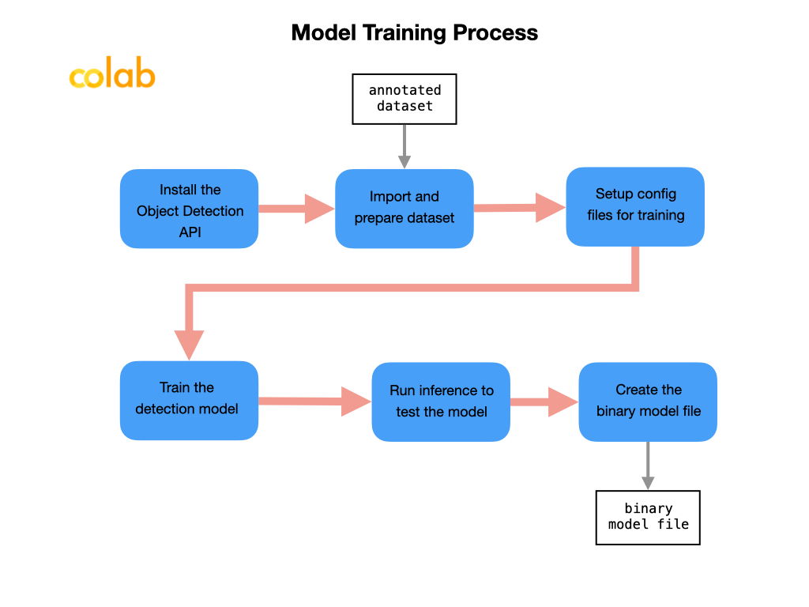
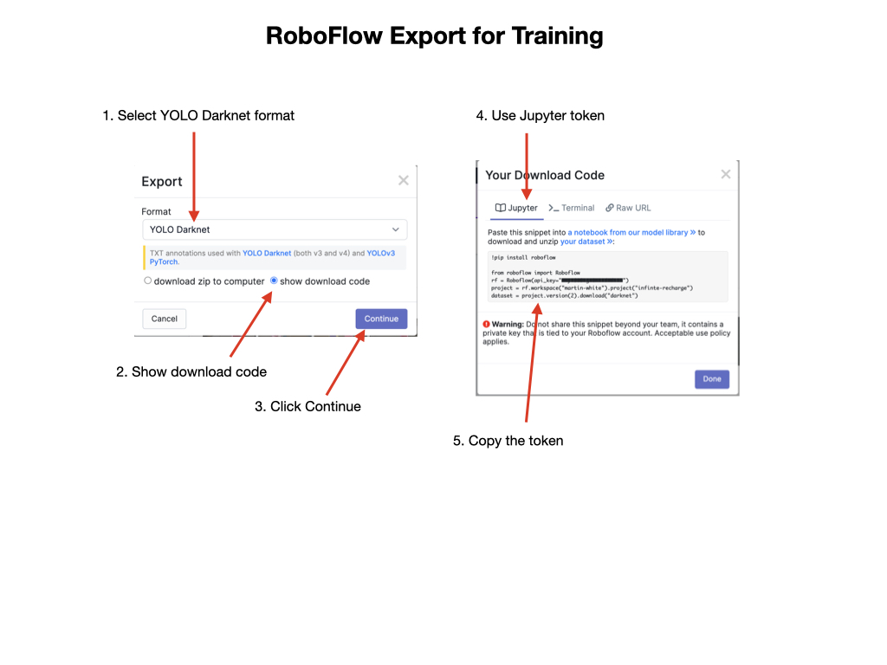
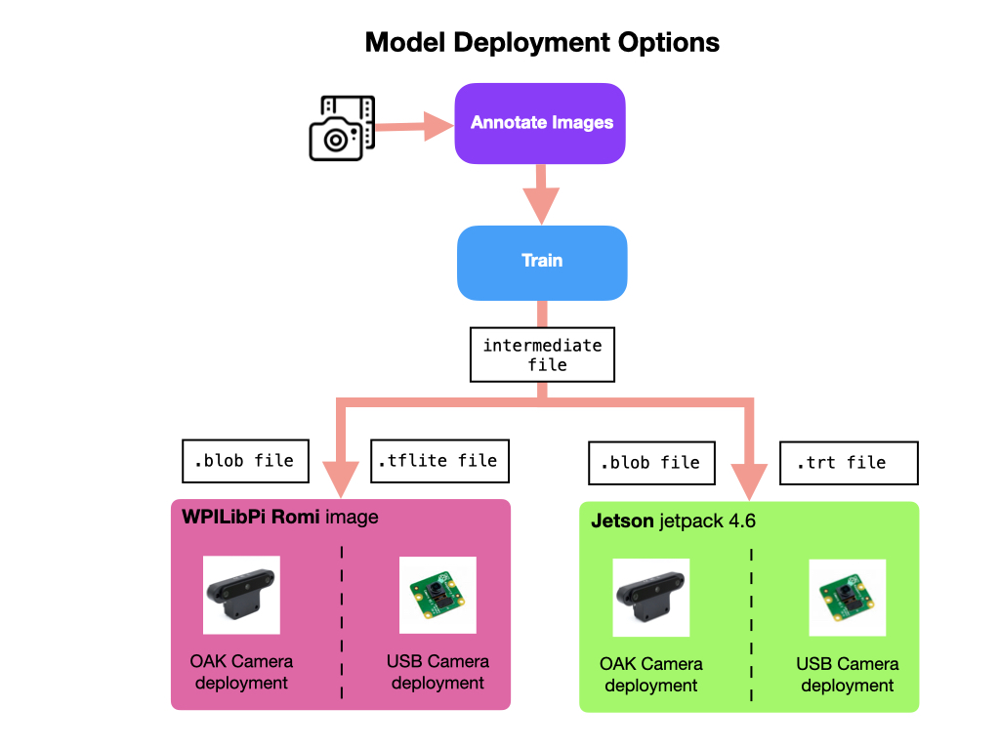
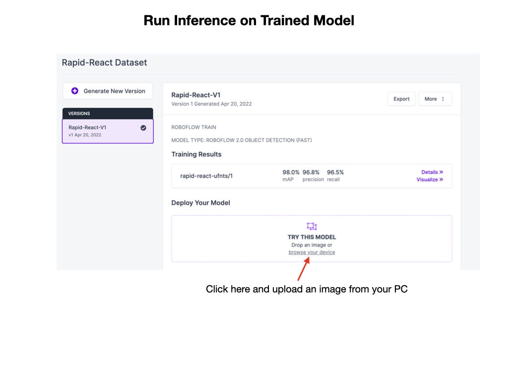

Training a Model in Colab
Once you have a dataset of the images that you’re happy with it can be used to train a detection model. A detection model is used to identify objects of interest in the field-of-view of the camera. The model will be trained to recognize these objects, for example, the red and blue balls in the Rapid React competition. The trained model will be deployed to Single Board Computer (SBC) such as a Raspberry Pi or Jetson Nano for competition.
In order to deploy a model on the competition robot it can be trained using Google Colab. Google Colab uses Jupyter Notebooks that are run directly Google’s online servers. The Colab platform has GPU processors available that significantly speed up the training process. Colab is free to use, which makes it a good option since it can be expensive to setup a comparable training environment on a PC.
Make sure that you’re familiar with how Google Colab works. For a quick introduction watch this Google Colab YouTube video. Also see the Basic operations in Colaboratory notebook tutorial page.
You can use various model types for training. You need a model that’s very fast at processing the streamed video coming from your robot’s camera. Two of the most popular models for this are Yolo Darknet and SSD MobilNet. During the training process you’ll import your annotated dataset, train the model, and validate it. The end result will be a binary file that you’ll need to deploy to your target platform.

In order to train our models we use Jupyter Notebooks that are run on the Google Colab online server. Here are the Roboflow notebooks that can be used to train each of the model types:
The first thing to do once the notebook loads in Colab is to save a copy of it into your Google Drive. At the top left of the Colab page go to File -> Save a copy in Drive. Once the copy is created you should rename it, i.e. you might change “Copy of Roboflow-TensorFlow2-Object-Detection.ipynb” to “Rapid-React-Roboflow-TensorFlow2-Object-Detection.ipynb”.
When you execute the first cell it will allocate a GPU for you. You should try and complete all of the training steps in a single session. If your page is inactive for more than an hour the session will disconnect and you will have to start over. Once you have the Colab notebook loaded it will guide you through the steps to train, validate, and export the model. The next sections will walk you through the training process for the SSD MobileNet and Yolov4 Tiny Darknet models.
Training an SSD MobileNet Model
Installing the Tensorflow Models and API
Install the Tensorflow models from the Model Zoo
Install the Object Detection API
Import the Annotated Dataset
Setup Configuration Files for Training
Train the Model
Run Inference to Test the Model
Save the Model
A Saved Model contains a complete TensorFlow program, including trained parameters (i.e, tf.Variables) and computation. It does not require the original model building code to run, which makes it useful for sharing or deploying with TFLite
Training a Yolo Model
Install the Darknet API
This requires three steps:
Configure a GPU environment on Google Colab
Install the Darknet YOLOv4 training environment. The darknet software is cloned from GitHub and then compiled. After install you’ll see the darknet directory structure in the Files sidebar menu.
Download the YOLOv4 Convolution Network weights. These weights are the starting point for training the model. We will be using Transfer Learning, which is a machine learning method where a model developed for a task is reused as the starting point for a model on a related task.
Import the Dataset
In order to train the dataset in Colab it has to be exported to a format compatible with the training model. In our case, we’ll be using the YoloV4 training model, so we’ll export it in YOLO Darknet format. The export process generates a .txt file along with each image that describe the bounding boxes and the label identifier. The txt file will have the same name as the image and contains one line per bounding box.
Once the export is complete you will be displayed a token that can be used to import the dataset into Colab.

Download your custom dataset for YOLOv4 and set up directories. This is where you get your dataset from Roboflow into the Colab notebook. Copy the export key from the Roboflow export and paste it into the notebook. Your key should look something like this:
pip install roboflow
from roboflow import Roboflow
rf = Roboflow(api_key="yourkey")
project = rf.workspace("your-name").project("rapid-react")
dataset = project.version(2).download("darknet")
The next step sets up training file directories for your custom dataset.
Setup Configuration Files for Training
The weights file for YoloV4-tiny is downloaded in order to generate a custom training configuration file for Darknet.
Next, we write a specialized training configuration file based on our type of an object detection model. The configuration file contains a set of parameters for the training process. These parameters are customized for your dataset that will contain good default values so there shouldn’t be much need to change them.
Train the Model
The next step is to train a custom YOLOv4 object detector.
As the training progresses files with the suffix .weights will show up in the darknet/backup directory. As soon as you have a file with a name of <dataset>_best.weights you can stop the training process.
Run Inference to Test the Model
The process of validating an image with a model is called Inference. This step will load the YOLOv4 trained weights and do inference on the validation image set.
Saving the Model
When you are satisfied with the model’s testing results you can convert it to a file format that’s suitable for your deployment platform.

Training Model in Roboflow
During the testing phase you can train and validate your model in Roboflow. To train a model in Roboflow watch the Training YouTube Video and read the Train documentation. Once you have a trained model it can be validated directly on the Roboflow site by uploading a test image. It’s very important that the test image was never used in the training or validation set.
To validate, go to the Versions section of your Roboflow account, select an image of the objects that you want to run inference on and upload it to the site. If your model is properly trained you should see bounding boxes around the objects of interest.

See the next section on Testing the Model for more testing options.
Next Steps
Desktop Deployment
In order to make the training and validation workflow more efficient it’s useful to have a desktop enviroment setup into which you can plug the OAK-D camera. Here is a list of options that you can employ for that purpose.
(see Desktop Deployment Options)
References
Roboflow Blog How to Train YOLOv4 on a Custom Dataset
Roboflow Training - Youtube Video
Google Colab - YouTube Video
Roboflow Computer Vision Model Library - Colab Notebooks
Thomas Gamauf - Tensorflow Records? What they are and how to use them